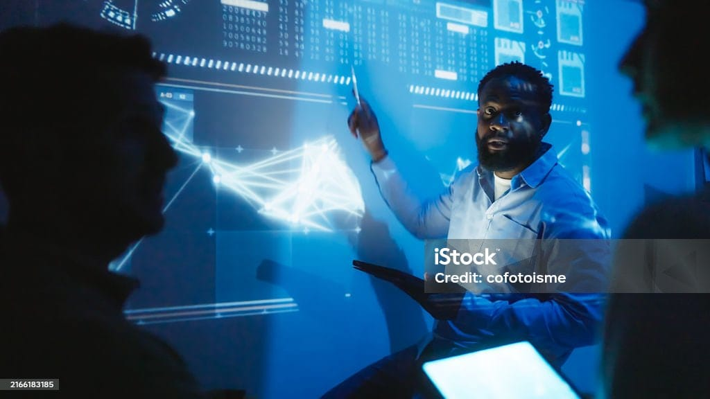

Mening loyihalarim
Mening ko'nikmalarim va ishtiyoqimni namoyish etuvchi ishlarimdan tanlov.
UniVerse Turkiye
Turkiyadagi talabalar uchun universitet tanlash ma'lumotlari va imtihon maslahatlashuvini markazlashtirish uchun rejalashtirilgan raqamli platforma.

O'rta maktab veb-sayti
Mening o'rta maktabim (9-12-sinflar) uchun o'quv qo'llanmalari va namunaviy imtihon savollarini taqdim etuvchi markazlashtirilgan akademik markaz.
Asosiy AI modeli (TR-LLM tashabbusi)
Turkiya uchun professional darajadagi, mustaqil katta til modelini yaratish bo'yicha davom etayotgan tadqiqot-ishlanma tashabbusi.